닥터 하우스를 통해 보는 "당연지정제란 무엇인가 ?"
게시: 2019-10-24T06:30:06+09:00
제가 가장 좋아했던 미드는 'House' 입니다. 괴짜 절름발이 천재 진단학과 의사인 그레고리 하우스는 모든 것을 자신의 뜻대로 처리하고, 남을 위한다는 위선적 행위가 적어도 겉으로는 전혀 없으며 (물론 내면적으로는 다릅니다), 남을 골려먹기 좋아하는, 세상에 무서울 것 없는 남자 중의 남자입니다. 하우스를 보면서, 저는 하루에도 몇번씩 왜 나는 '하우스'가 아닌 '나'로 태어났을까 하고 번민했습니다. 하우스 역을 맡은 휴 로리는 한때 TV 드라마 편당 출연료가 역대 최고액을 기록하여 기네스 북에 오르기도 했습니다. 휴 로리는 중년이 저물도록 하우스 이전에는 뭐 그런저런 단역으로만 출연했다가, 여기서 포텐이 빵 터지면서 '인생은 모르는거다'라는 말을 실감하게 해주었습니다.
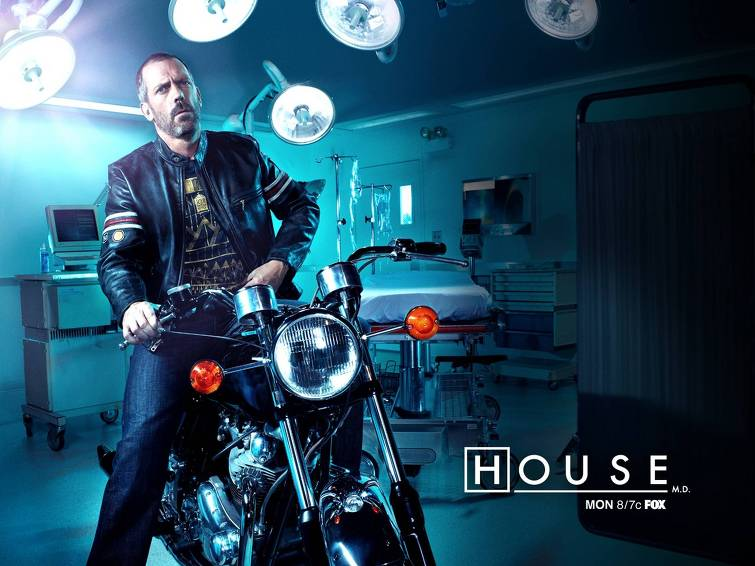
이 하우스 시즌 6 중 스토리 하나가 '5 to 9' 입니다. 당연히 '9 to 5'를 뒤집은 이 제목은 새벽부터 밤늦게까지 엄청난 스트레스와 격무에 시달리는 (그 스트레스와 격무의 상당부분은 하우스가 저지른 일의 뒤치닥꺼리입니다) 병원 원장 리사 커디 박사의 하루를 묘사한 것입니다. 예, 이 에피소드의 주인공은 드물게도 하우스가 아닌 커디 원장입니다.
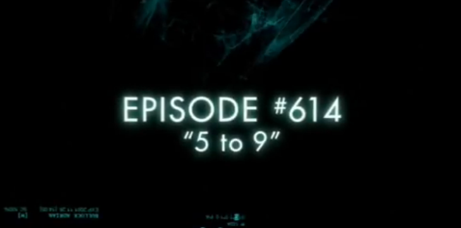 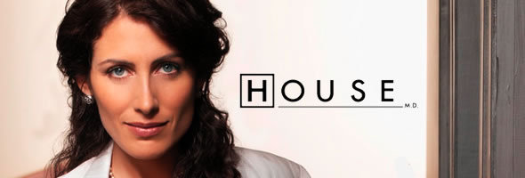
이 고된 하루는 리사의 원장 자리가 걸린 매우 중요한 하루였는데, 바로 어느 의료 보험사 중역과의 담판 최종일이었기 때문이었습니다. 제가 이해 못할 무슨 지급률에 대해서 의료 보험사와 리사의 병원은 서로 합의를 보지 못하고 팽팽한 기싸움을 벌이고 있었는데, 이날 중으로 합의를 하고 계약을 하지 못하면 끝장이 나게 되어 있었거든요. 그 끝장이라는 것이 간단합니다. 그 보험사 가입 환자들을 치료하지 못하게 된다는 것이지요.
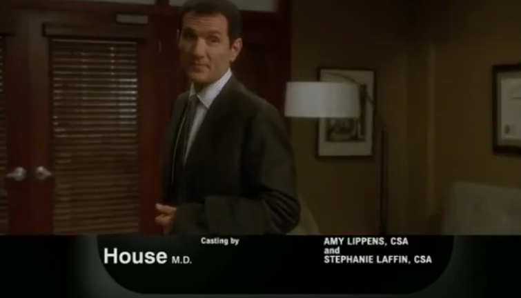
(이 아저씨가 그 보험사 중역으로 나왔습니다.) 실제로도 그런지 모르겠습니다만, 그 드라마 상에서 커디의 병원은 이 보험사와만 단독 계약을 맺고 있었는데, 커디는 병원측이 12%는 가져가야 한다고 주장했고, 보험사에서는 6% 이상은 못 준다고 버텨 왔었습니다. 심지어 병원 이사회 측에서도 '그냥 6% 받고 계약하자' 라고 주장하지만, 커디의 논지는 간단했습니다. "우리 병원은 닥터 하우스가 이끄는 미국 최고의 진단학과를 가지는 등, 많은 환자들이 선호하는 병원이다. 따라서 12% 정도를 받는 것은 당연한 것이다". 병원 이사회에서는 그에 동의하지만, 대신 만약 보험사와의 계약에 실패하면 리사도 그 책임을 지고 해고될 거라고 엄중 경고합니다. 나중에 보험사 중역은 '리사 원장 당신이 이겼다, 보험사에서 8% 주겠다고 한다' 라며 계약서를 내밀지만, 리사는 12%를 주장하며 끝까지 버팁니다. 그러다 제한 시간인 오후 3시가 넘도록 추가 제안이 없자, 마침내 리사는 전체 병원 의사들을 강당에 모아놓고 보험 계약에 실패했음을 알리고, 당장 내일부터 새로운 환자를 받을 때는 무조건 현금을 내는 환자들만 받을 수 있으며, 입원한 기존 보험 환자들은 2주안에 다른 병원으로 옮겨야 한다고 선언합니다. 의사들은 '이제 이 병원이 망하는 거구만, 새 직장을 알아봐야 하네' 하며 떠들썩 해지지요.
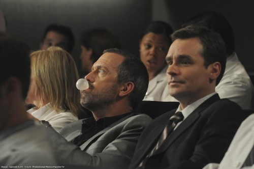
(보험사와 계약이 안되었기 때문에 이젠 현금 환자만 받는다고 리사가 발표하자, 의사들은 모두 술렁거립니다. 병원이 망한다는 이야기와 동격이었기 때문입니다. 그러나 천하에 무서울 것이 없는 남자 하우스는 무사태평이네요. 하긴 하우스 같은 천재 의사라면 당장 직장이 문을 닫는다고 해도 무엇이 걱정이겠습니까 ? "부러우면 공부를 해라 !" ) 그러다 드라마 말미에, 리사가 고된 하루를 거의 끝내고 이사회에 사직서를 제출하러 올라가는 엘리베이터 앞에 서있는데, 뒤에서 누군가가 리사에게 "야 이 썅년아(bitch)" 라고 부르는 소리를 듣습니다. 놀라고 화가 나서 획 돌아서는 리사에게, 그 보험사 중역이 아무 말 없이 서류 뭉치 하나를 건네주고는 돌아가는데, 그 서류를 읽어본 리사는 "Yeahhhhhhhhhhhhhhhhh" 하고 승리의 환호성을 올립니다. 보험사가 12%에 동의하는 내용이었거든요. 이 '5 to 9' 편은 재미있기도 했지만, 미국 병원과 의료 보험 체계에 대해서 엿볼 수 있는 기회가 되기도 했습니다. 그러니까, 미국 의료 체계에서는 닥터 하우스처럼 유능한 의사가 있는 병원에서 치료를 받고 싶다면 비싼 보험사의 비싼 보험을 들어야 하는 것입니다. 이건 자본주의 논리에서는 당연한 것입니다. 의료 서비스도 하나의 상품에 해당하는 거니까, 질좋은 서비스를 제공하는 의사/병원은 더 높은 수가를 받을 권리가 있는 것이고, 또 그렇게 높은 수가를 받기 위해서 더 뛰어난 치료법 개발에 열중하는 것이지요.
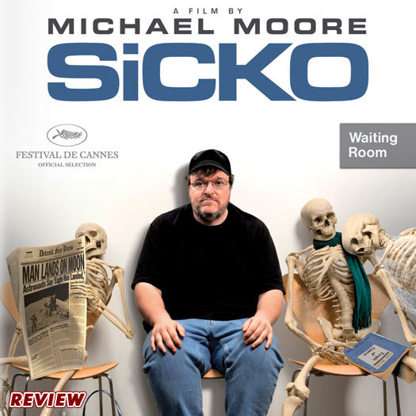
가령 여러분 댁에 암 환자가 있다고 가정해보시지요. 당연히 가족된 입장에서는 최고의 의사에게 치료를 받게 하고 싶으실 겁니다. 그리고 그런 최고의 의사에게 치료를 받기 위해서는, 우리나라에서는 그냥 줄만 서시면 됩니다. 우리나라에는 특진 제도라는 것이 있어서, 약간의 돈만 더 지불하면 어느 의사에게 진료를 받겠다고 지명을 할 수 있거든요. 실제로, 어떤 특정 암 분야에 명의로 소문난 의사 선생님의 진료실 밖은 대기 환자가 수두룩합니다. 같은 과인데도, 바로 그 옆의 다른 의사 선생님 진료실은 상대적으로 매우 한가하더군요. (환자가 너무 많아서 병원에서는 그냥 다른 의사에게 진료를 받도록 권유하기도 하고, 절박한 상황이 아닌 환자들은 그렇게 밀려나기도 합니다.) 이런 상황은 우리나라가 당연지정제를 택하고 있기 때문입니다. (물론 보험 처리가 안되는 비싼 약이나 비싼 수술은 또다른 문제입니다.) 당연지정제라는 것은 법적으로 모든 의료기관이 건강보험 지정 의료기관으로 되어 있는 것을 뜻합니다. 즉, 드라마 하우스에서처럼, 하우스 같은 명의가 있는 병원에서 '우리 병원은 치료를 더 잘하니 더 비싼 수가를 주는 보험사의 환자들만 받겠다' 라는 것이 안되는 것입니다. 국민 건강보험에 가입만 되어 있다면 (이것도 의무가입제라서 국민 모두가 무조건 가입해야 합니다), 누구든 하우스에게 가서 진료를 받을 수 있는 것이지요. 만약 당연지정제가 폐지된다면, 이름난 병원들은 낮은 수가를 주는 국민 건강보험과는 계약을 하지 않고 더 높은 수가를 주는 비싼 민간 보험사와 계약을 할 겁니다. 그럴 경우 부유층은 민간 보험사에 비싼 보험료를 내는 대신 더 수준 높은 의료 서비스를 받을 수 있게 됩니다. 더군다나 그런 병원에는 어중이떠중이(?) 서민 환자들이 길게 줄을 서는 일도 없으니 꿩먹고 알먹고의 효과가 나겠지요. 이는 의사들로서도 좋은 일이 될 수 있습니다. 더 높은 수가를 받게 되니 당연히 더 높은 급료를 받을 수 있을 뿐만 아니라, 수많은 서민 환자들을 진료하지 않아도 되니 의학 연구과 치료법 개발에 더 많은 시간을 투입할 수 있게 되니까요. (드라마 상에서 닥터 하우스도 의무적으로 하게 되어 있는 클리닉 (Clinic), 즉 일반 환자 진료 시간을 무척이나 싫어 합니다.) 그러나 국민 대다수를 차지하는 서민들 입장에서는 그야 말로, 돈이 없어서 질 높은 치료를 받지 못하는 사태가 벌어집니다. 전에는 대기 시간이 길더라도 명의에게서 치료를 받을 수 있었는데, 이제 그런 명의들은 재벌이나 갑부들만 상대하는 양반들이 될 가능성이 커진 것지이요. 그야말로 의료 세계에서도 자본주의 논리가 통해서, 돈이 있으면 살고, 돈이 없으면 죽는 일이 벌어지는 것입니다.
(이 잘생긴 친구가 체이스 입니다.) 이 '5 to 9' 에피소드에는 곤욕스러운 일들 여러가지를 한꺼번에 처리해야 하는 커디의 고충이 그려지는데, 그중 하나가 훈남 의사 체이스 때문에 어떤 멕시코계 목수로부터 병원이 소송을 당하는 일이었습니다. 이 목수는 작업 도중 엄지손가락이 절단 되었는데, 비싼 보험을 들지 못해 치료비를 제대로 댈 수 없던 목수는 그냥 '제일 싼 치료를 해달라'고 체이스에게 부탁했습니다. 그러나 체이스는 '목수가 엄지손가락이 없다면 앞으로 일은 어떻게 하나' 라는 생각이 들어, 그냥 엄지손가락을 붙여 준 것입니다. 치료비는 억대가 나왔습니다. 그러자 이 목수는 '원하지도 않은 치료를 하고서 치료비를 내라는 것은 부당하다' 라며 소송을 건 것이지요. 커디는 이 목수에게 '너를 위해서 그런 치료를 한 의사에게 소송을 할 수 있는 거냐' 라고 달래지만, 그 목수는 무척 미안해 하면서도 '이 치료비를 다 내려면 난 가족들과 길바닥에 나앉는 수 밖에 없다' 라고 소송을 걸 수 밖에 없다고 하지요. 이것이 당연지정제가 사라질 경우 보시게 될 의료 민영화의 알기 쉬운 모습입니다.
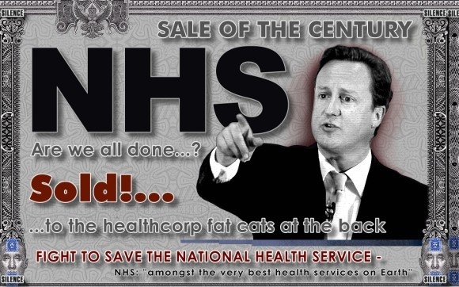 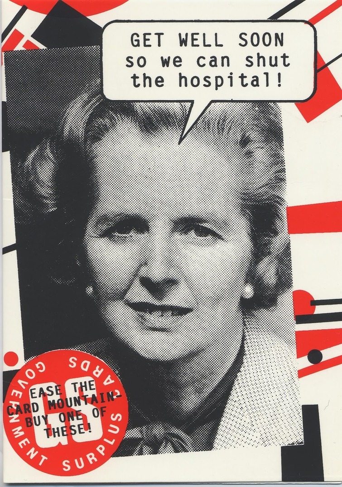
의료 민영화를 해야 의료계가 발달하고, 그에 따라 국민들도 더 나은 의료 서비스를 받을 수 있다라는 주장이 얼마나 공허한 거짓말인지는 허핑턴포스트의 다음 기사를 읽어보시기 바랍니다. 신자유주의자 대처도 건드리지 못한 영국 국가의료서비스 (NHS)와 미국 의료계의 현실을 통계치로 보여주는 기사입니다. 여기서는 일부 통계치만 전재했습니다. http://www.huffingtonpost.kr/2014/03/09/story_n_4932183.html NHS의 인기를 이른바 ‘복지 포퓰리즘’의 결과라고 깎아내리기는 쉽지 않아 보인다. NHS가 오랫동안 보여준 성과가 있어서다. 공공성을 강조한 NHS의 성과는 세계에서 가장 시장화한 미국 의료제도와도 종종 함께 저울대에 오르는데, 간단한 수치만 살펴봐도 영국의 성과는 미국을 압도한다. 경제협력개발기구(OECD)의 자료를 보면, 영국인이 한해 의료비에 3405달러를 쓰는 동안 미국인은 8508달러를 지출한다. 미국인의 의료비는 영국인의 2배를 훌쩍 넘는다. 그러나 정작 영국인의 평균 수명은 81.1살로, 미국인의 78.7살을 앞지른다. 미국은 국내총생산(GDP)의 17.7%에 이르는 막대한 부를 의료 비용으로 쏟아붓고도, 훨씬 적은 돈을 쓰는 영국(9.4%)보다 성과가 저조했다. 조금 더 정교한 연구에서도 영국의 의료제도는 미국보다 후한 평가를 받고 있다. 2001년 세계보건기구(WHO)가 평가한 보건의료제도 평가 순위에서 영국은 전체 191개국 가운데서 18위를 차지했다. 프랑스(1위), 이탈리아(2위), 일본(10위) 등에는 못미쳤지만, 스웨덴(23)이나 덴마크(34위) 등 쟁쟁한 복지국가들보다 앞섰다. 반면 미국은 한참 뒤진 38위에 머물렀다. 한국은 좀더 뒤처진 59위였다. 영국 본머스대학 콜린 프리차드 교수 등이 2011년에 내놓은 논문을 보면, 영국의 NHS는 OECD 회원국 의료 시스템 가운데 아일랜드에 이어 두 번째로 좋은 평가를 받은 반면, 미국은 바닥권인 17위로 평가됐다.
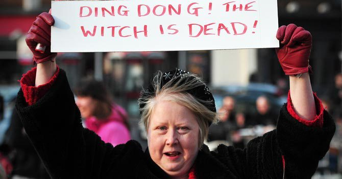 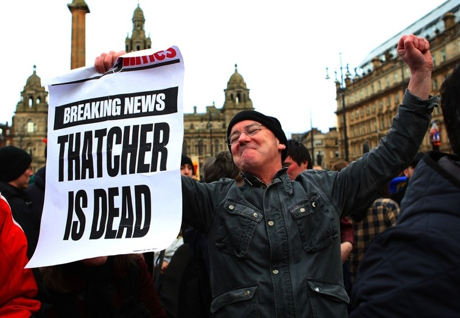
(대처 전수상의 사망 소식에 환호하는 영국의 많은 '일부' 시민들....) 우리나라의 소위 우파라는 사람들이 주장하는 바 중 하나는 '국가가 제멋대로 강제하는 국민건강보험 의무가입제'를 폐지해야 한다는 것입니다. 이유가 여러가지를 대지만 사실 주된 이유는 간단합니다. 현재의 국민건강보험은 받는 혜택에 비례하도록 보험료를 책정하는 것이 아니라, 버는 소득과 가진 재산에 비례하도록 책정하기 때문에, 부자들에게 불리하다는 것입니다. 즉, 일종의 소득세 비슷하게 되어 있는데, 이건 보험이라는 개념 자체에도 어긋나는 행위일 뿐더러 이중 과세라는 것이지요. 그런 분들에게 하고 싶은 말이야 많습니다만, 그냥 이 말씀만 드리고 싶습니다. 독일에서 최초로 근대적인 국민건강보험을 도입한 사람은 우파들의 영웅인 철혈재상 비스마르크였고, 우리나라에 현재와 같은 국민건강보험을 도입한 사람은 반신반인이라 일컬어지는 '가카' 박정희였습니다. 그 양반들이 종북 빨갱이 사상에 물들었기 때문에 그런 제도를 도입한 것이 아니었습니다. 국민들이 좌파들의 외침에 귀기울이지 않도록 하기 위해서 그랬던 것입니다. 제 정치적 목표는 정권 교체가 아닙니다. 어떤 정권이 되었건, 진보적인 복지 제도와 그를 위한 부자 증세를 도입하자는 분위기 조성이 제 정치적 목표입니다. 제발 당장의 금전적 이익에 눈이 멀지 말고, 우리나라의 자유시장경제 체제를 지키기 위해서라도, 진보적인 복지 제도와 그를 위한 부자 증세를 지지해주셨으면 합니다.
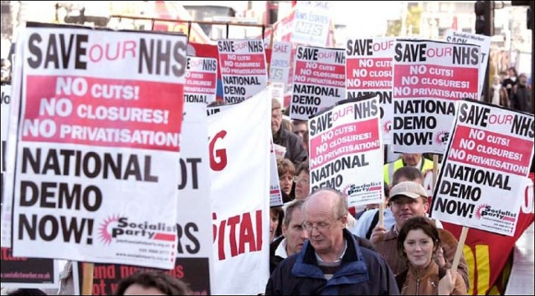
** 이 글은 제가 2014년에 다음 블로그에 썼었고 그 이후에 인터넷 매체인 ppss.kr 에도 전재되었던 것입니다. 새삼스럽게 재탕하는 이유는 최근 미국 Medicare for all 관련된 Andrew Yang의 정책에 대한 어떤 사람의 기고문을 우연히 읽어서 그걸 다음주 목요일에 번역해서 올리려고 하는데, 이 예전 글을 미리 한번 읽어두시면 그 글을 이해하는데 좀 도움이 되실 것 같아서입니다.